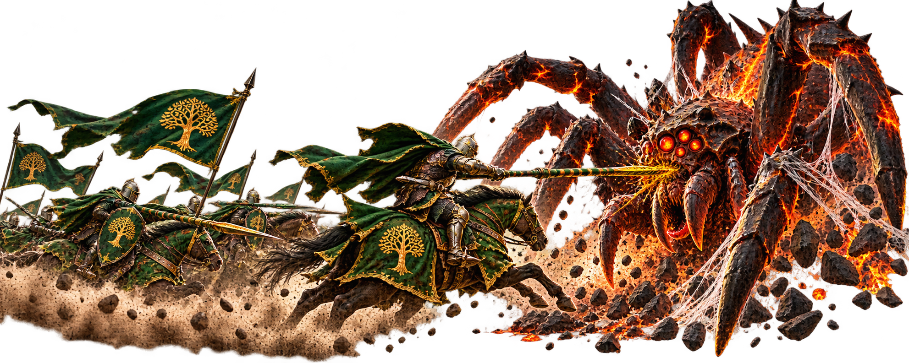

Titantula
Titantula is a recurring server-wide event where players attack a giant mechanical spider that appears in Norheim. It is primarily an individual event: players across the server attack the boss with their own marches and earn rewards from their participation and damage.
When Does It Happen?
Titantula appears every Wednesday and Sunday, six times during the day. It spawns at 00:00, 04:00, 08:00, 12:00, 16:00 and 20:00 UTC and becomes vulnerable two hours later, at 02:00, 06:00, 10:00, 14:00, 18:00 and 22:00 UTC.
Once vulnerable, Titantula can be attacked for 30 minutes, unless the server defeats it first.
Why Participate?
Titantula is an important source of Enchant Stones, which are used to upgrade your Immortals' equipment. If you want to improve weapons, armor and other equipment faster, this is an event worth participating in.
Every attack can reward Enchant Stones based on the damage you inflict, making Titantula particularly useful when equipment development begins to slow down.
Justice Points
Attacking Titantula also earns Justice Points. As your Justice Points increase, you can unlock milestone rewards including speedups and Dragon Chest Keys.
Your Justice Points also determine your daily ranking. Ranking rewards can include Gems, Philosopher's Stones and universal speedups.
Attack Attempts
Every player receives 10 free attacks during each Titantula event day. Additional attempts can be purchased with Gems, up to a maximum of 20 attacks during the day.
You do not need to purchase additional attacks to benefit from the event. Using your free attacks whenever possible is already a good way to collect Enchant Stones and Justice Points.
Damage and Ranking
The amount of damage you deal matters. Players who finish among the Top 10 damage dealers for a Titantula spawn receive additional rewards, making a strong single-target march particularly useful.
There is also a special reward for the player who lands the killing blow.
Does Titantula Get Stronger?
Yes. When Titantula is defeated, the next Titantula that appears increases by one level. As its level rises, it becomes harder to damage effectively.
Newer players should not be discouraged if their damage is lower. You do not need to be one of the strongest players on the server to participate and benefit from the event.
Crimson Oak Advice
If you want to upgrade your Immortals' equipment faster, participate in Titantula whenever you can.
Use your free attacks, collect your Enchant Stones and Justice Points, and try to reach the reward milestones. Do not worry if stronger players deal far more damage than you do. Participation still gives you resources that help make your marches stronger.
The stronger you become, the more you will be able to earn from the next Titantula.